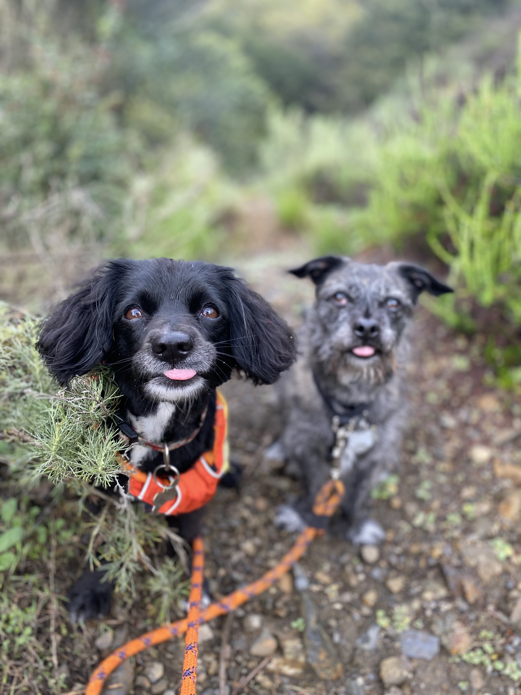

About
I started my adventure out in Rancho Cucamonga on March 30 2014.
Looks
A perfectly styled Cake for your outdoor adventure!
Cuisine
Living most of my life in Los Angeles, I have had the opportunity to taste the best of the best when it comes to food. So, you can trust my judgement in quality. No chef, michelin star restaurant can out do, the most delicious simplest ingredient of all time: tissue paper on the sidewalk.
If you want to craft a dish that has that je ne sais quois, use paper. Depending on your dish, paper can bring different variety of tastes to the table.
Printer paper brings a bit of chew. Tissue paper provides an excellent mouthfeel and fills the lungs and throat with its delicate powder scent. Toilet paper is a great in-between. It has a bit of chew, a bit of texture, and sometimes has a surprising perfume.
Street paper is for the true foraging dog chef. Foraging for paper is a unique and gratifying hobby. You'll discover tissues exploding with smells of spices, earth, citrus, mucus, and other mysteries. Many have volumes to speak to your senses as you sniff and devour their folds. The best is the paper with excrement hidden among its chambers. However, be careful when foraging for paper. Humans are often highly offended by the practice, so conceal your foraging behavior as much as possible. Dart for any small white object only when you know you can grab it without being intercepted.